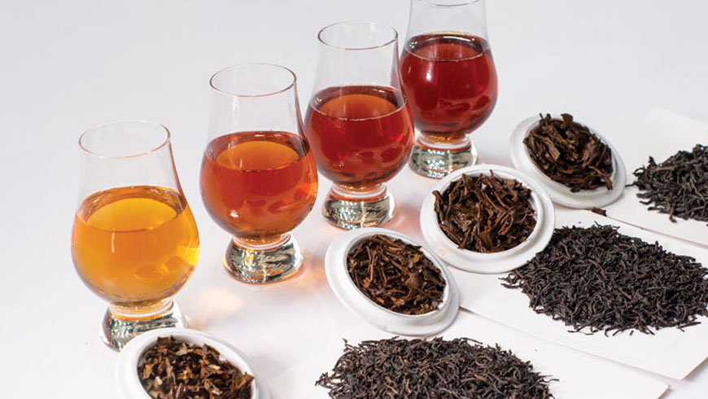
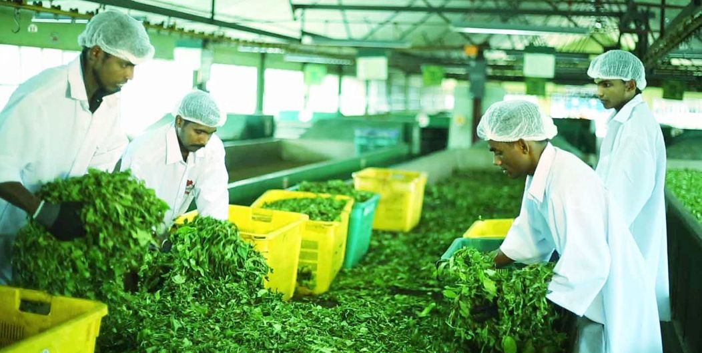

Sri lanka is the country known as the pearl of indian ocean for many decades and still.
the tea production of the country is being recognized as the one the best source tea producing country in the global market
Tea production is one of the main sources of foreign exchange for Sri Lanka. this source of income has a good impact to the economy of the country.
so the team Ceylonese Tea is to provide a good idea about the teas available in sri lanka and the leading the manufactures
in sri lanka . not only that you can order the 100% pure lankan tea which will be available in our buy now page
THE TEA.

Tea as a brew is a luminous green liquid with a good fragrance and a hot or cold drink that is tasty and fragrant.
But what really lies behind this beverage which has been capable of sustaining and sometimes even increase its appeal over millennia?
The central highlands of Sri Lanka have the perfect ecosystem for growing high-quality tea. The first tea plant arrived in Sri Lanka in 1824 from China,
as an ornamental plant for a botanical garden. In the years that followed, more tea plants were brought from Assam, Calcutta and Kenya.
The production of tea grew quickly due to how well the plants fared in the highland weather.
MANUFACTURERS OF SRI LANKAN TEA

The tea farmers and manufacturers of Sri Lanka are the
defenders of the old, orthodox way of growing black tea.
This is already agreed to produce
the finest black tea by most experts.
The orthodox system is comparatively sluggish and labor-intensive, even with the technical changes adopted over the last thirty or forty
years; but decent tea can not be rushed, as the tea planters and traders of Sri Lanka have always maintained.
Nor should it,
interestingly enough, be postponed.
If a quality product is to be obtained, the time dedicated
to each of the tea processing processes must be finely judged.
This is a question of the judgement of the tea-maker, since the correct timing depends on the plucked leaf's
moisture content, the conditions of temperature and humidity existing over the processing time, and a number of other influences.
While the method of producing fine black tea is basic in its essentials, it
is utterly important for success to have knowledge, experience and a 'feel' for the job.
buy now
the buy now page is gurantied that it sells only pure lankan tea that are cultivated,
brewed and packed in sri lanka
The products we sell is manufatured by